Portafolio
Resumen de lo aprendido
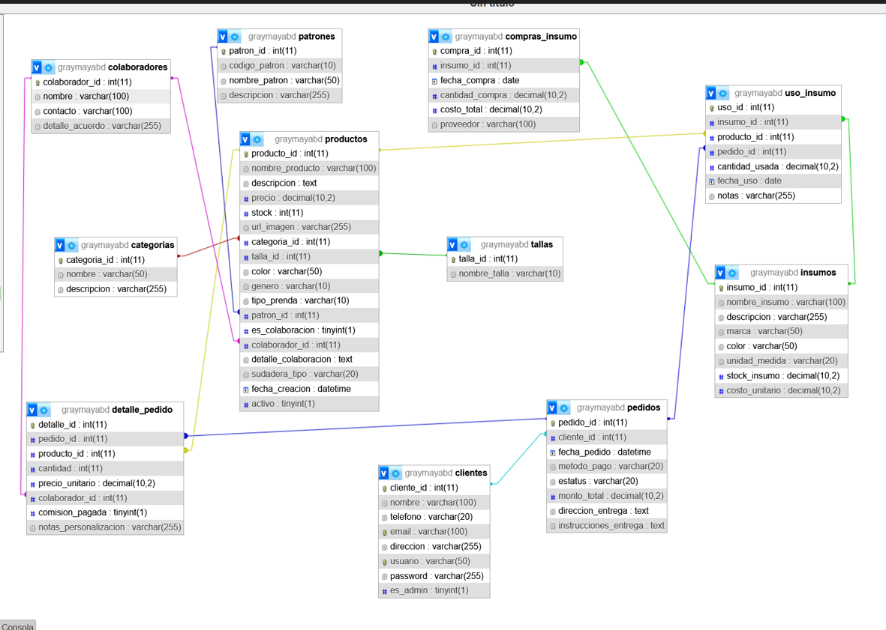
Un resumen de lo que he aprendido
Gran parte de mis proyectos se enfocan en el desarrollo backend, donde he aprendido a construir aplicaciones completas entendiendo no solo el codigo, sino tambien los procesos detras del desarrollo de software.
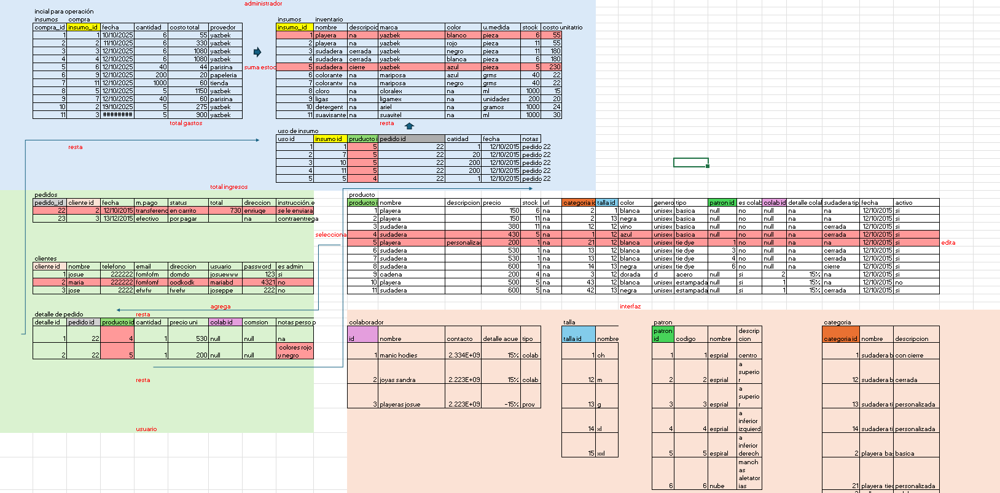
Stack principal
Mi principal stack es Python, aunque a lo largo de mi formacion tambien he trabajado con Java, C, C++ y PHP. Esto me ha permitido entender diferentes enfoques de programacion y fortalecer mi logica.
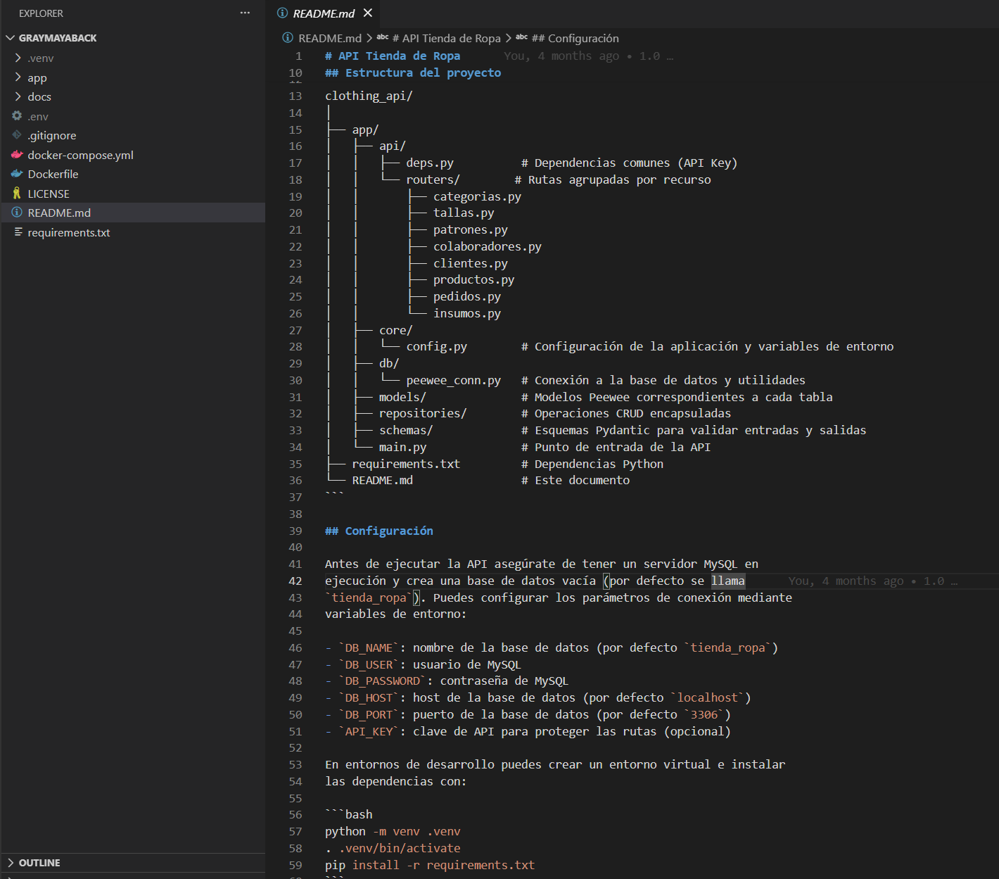
Frontend
Aunque mi enfoque es backend, tambien tengo conocimientos de frontend, habiendo desarrollado interfaces desde cero con HTML, CSS, JavaScript y Bootstrap. Esto me permite comprender la integracion completa entre cliente y servidor.
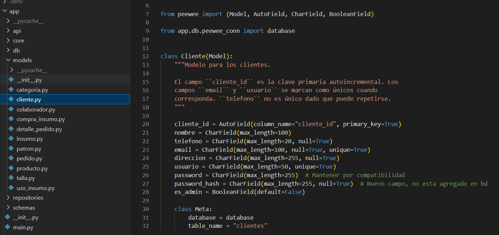
Proceso estructurado
En el desarrollo de mis proyectos sigo un proceso estructurado que incluye:
- Recoleccion de requerimientos
- Definicion de casos de uso
- Diseno de bases de datos normalizadas y relacionales
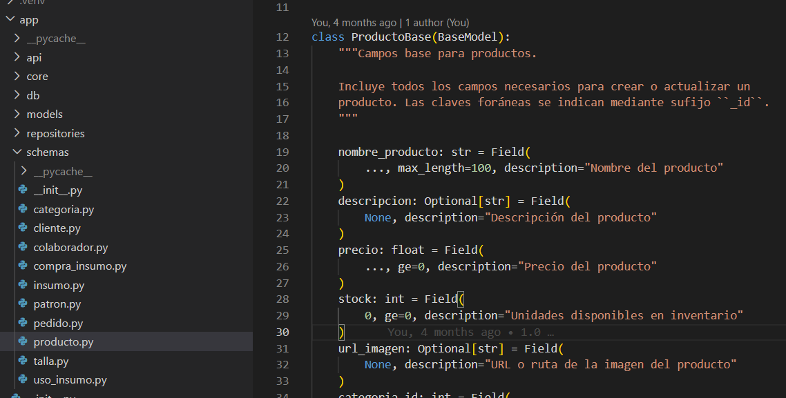
Pruebas manuales
Antes de implementar, realizo pruebas manuales para entender el comportamiento de los datos y asegurar que el diseno sea correcto.
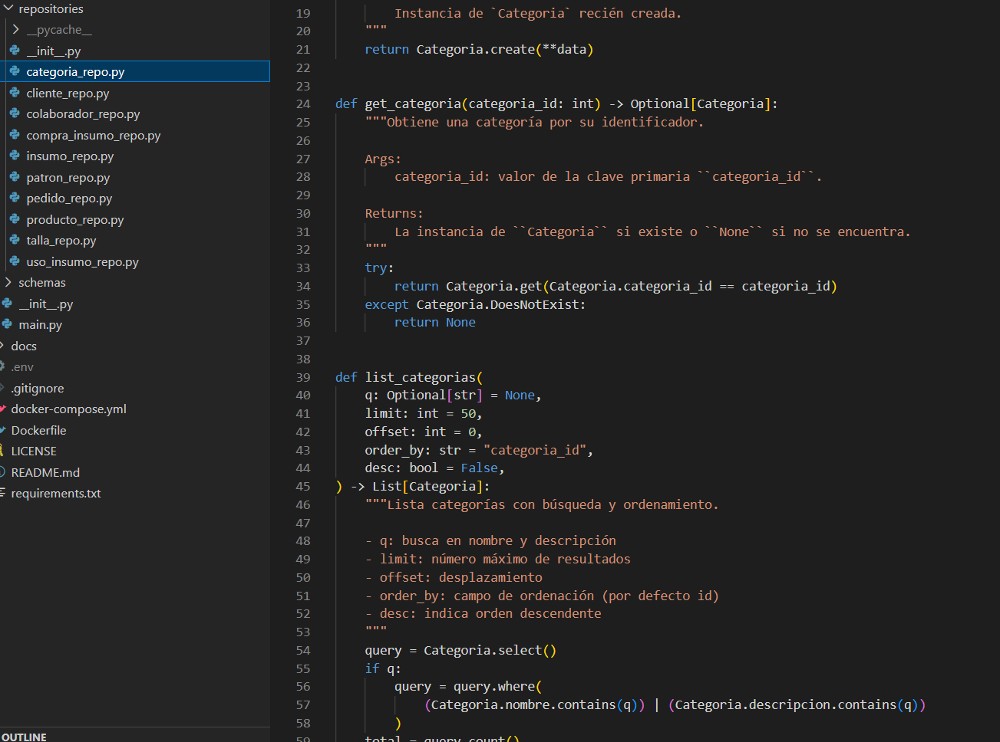
Documentacion
Documento la estructura de la base de datos y organizo mis proyectos con una arquitectura clara.
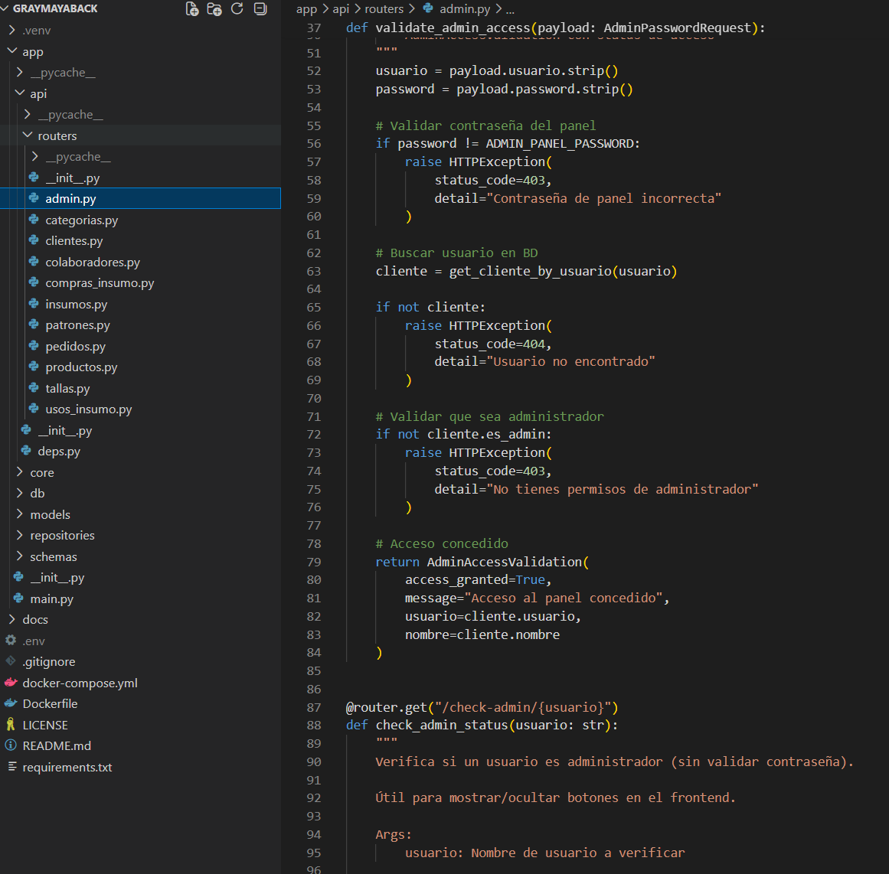
FastAPI
Trabajo con FastAPI para la construccion de APIs, utilizando Peewee como ORM para modelar la base de datos, y Pydantic para la validacion de datos, estructuracion de respuestas y separacion de la logica de negocio.
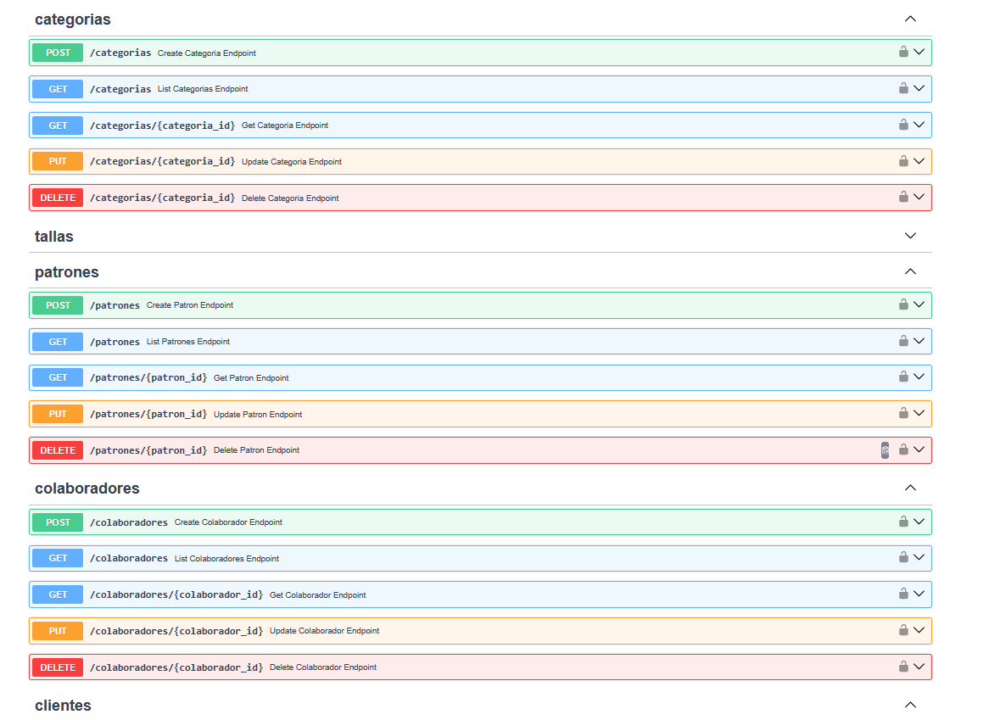
Modelos y esquemas
Utilizo esquemas Pydantic para la validacion de datos, estructura de las respuestas de la API, documentacion y para separar la logica de negocio de la base de datos.
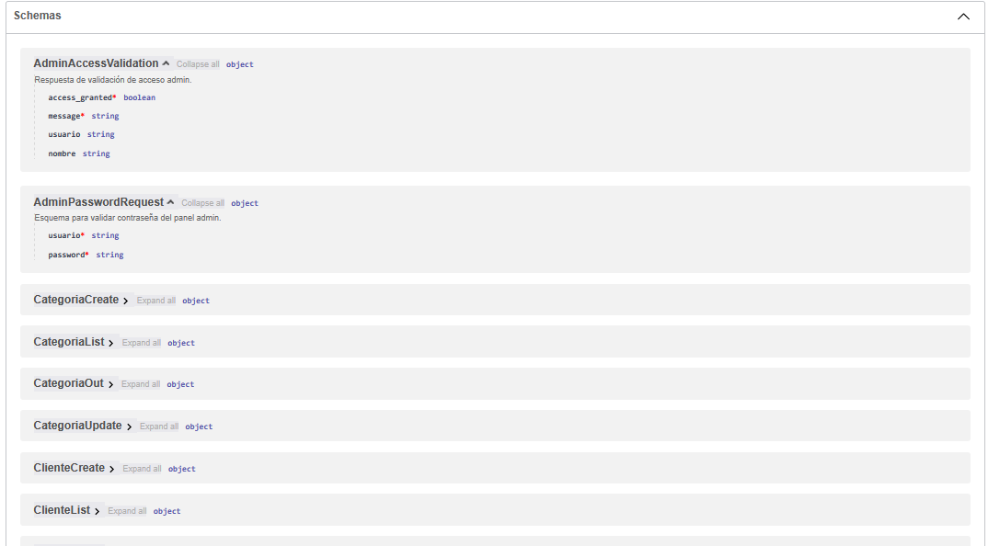
Repositorios
Los repositorios se utilizan en los endpoints para encapsular la logica de interaccion con la base de datos y mantener el codigo organizado.
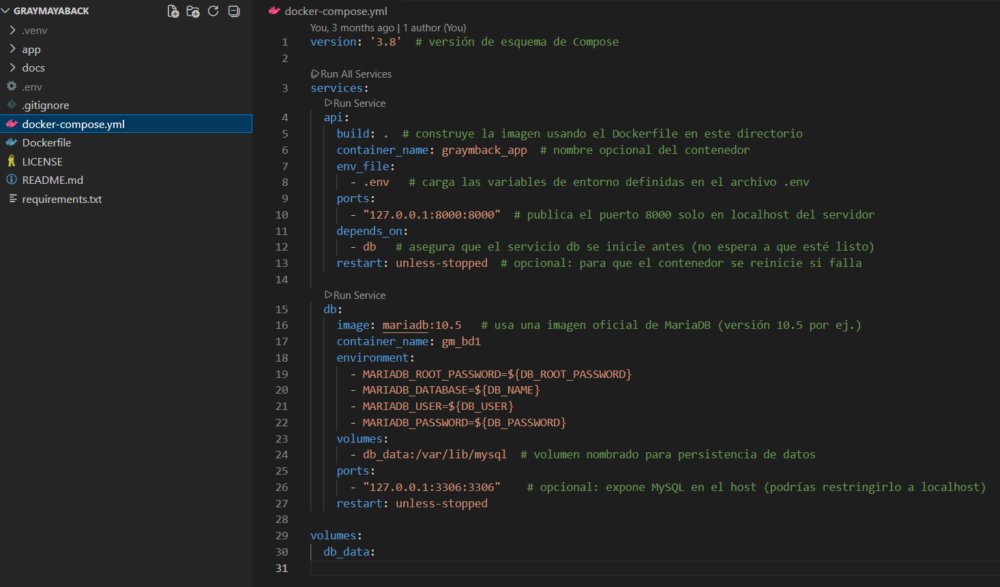
Endpoints
Despues de un detallado proceso, pruebas unitarias y de integracion, los endpoints quedan organizados por cada tabla.
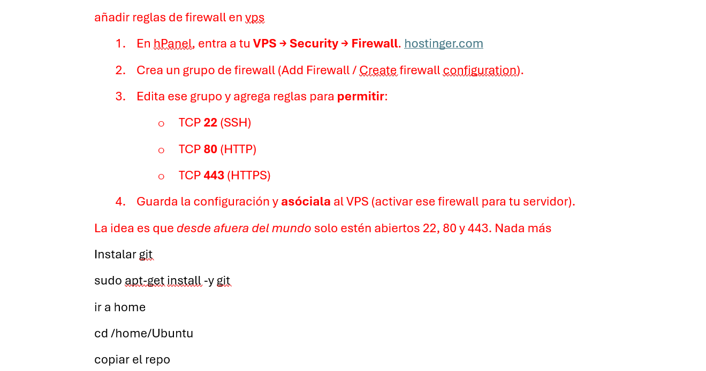
Seguridad y despliegue
Tambien aplico buenas practicas de seguridad y despliegue, como:
- Manejo de variables sensibles en archivos .env
- Uso de API Keys
- Control de acceso mediante roles y permisos
- Configuracion de CORS
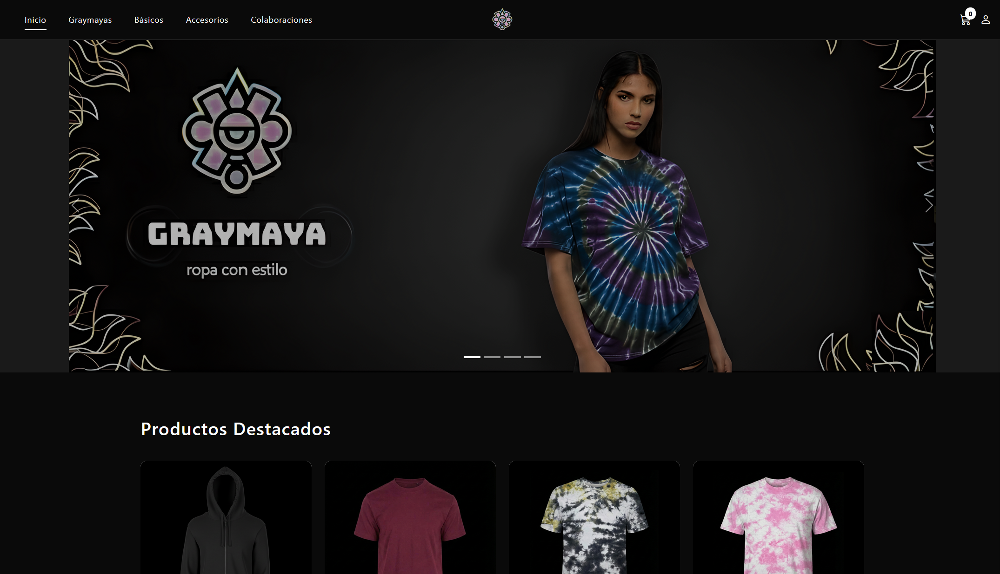
Docker y separacion por capas
Un adicional que implemento es la separacion por capas cliente-servidor, es decir, manejar un servidor exclusivo para el backend y otro para el frontend, utilizando Docker para el despliegue del backend.
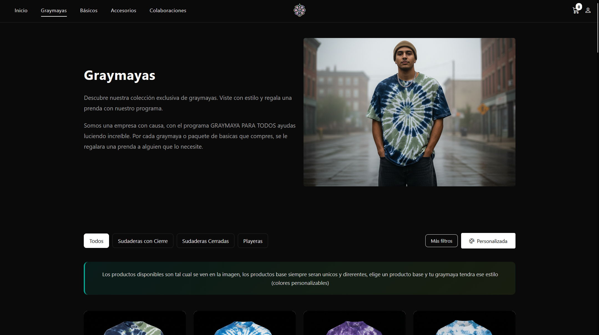
VPS
He trabajado con VPS donde implemento:
- Configuracion de SSH segura
- Firewall con puertos restringidos
- Proxy inverso con HTTPS y certificados SSL
- Backups automaticos de base de datos y servidor
- Automatizacion de actualizaciones
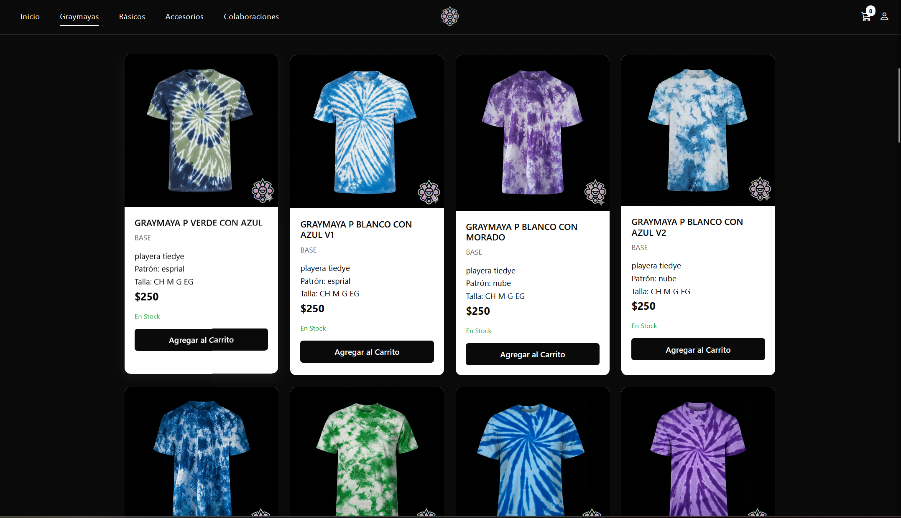
Documentacion tecnica
Adicionalmente se documenta todas las configuraciones y se desarrollan manuales tecnicos del proceso para mantenimiento y manejo de catastrofes.
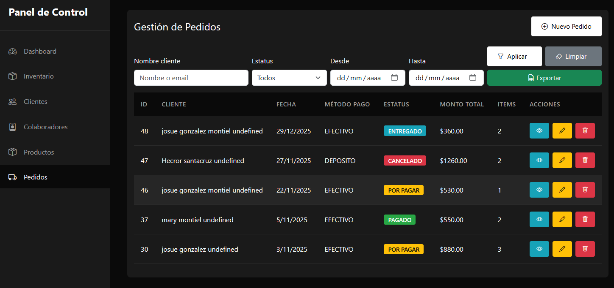
Conocimiento solido
En conclusion, cuento con bases solidas en programacion (incluyendo POO) y destaco principalmente por mi logica de desarrollo y comprension del funcionamiento de sistemas completos: APIs REST, bases de datos, servidores y despliegue, Docker, asi como un dominio basico de los fundamentos del frontend.
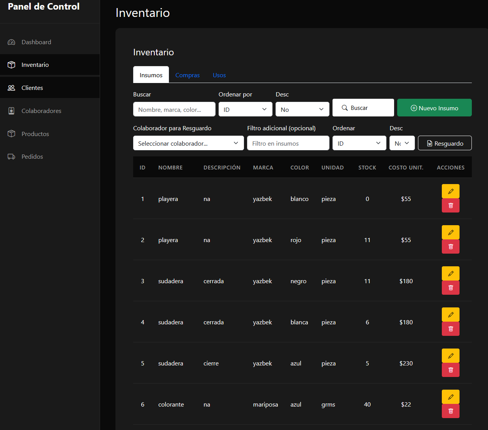
Resultados
Como resultado, he desarrollado aplicaciones web funcionales, organizadas y con buenas practicas, incluyendo una tienda online de ropa con panel de administracion para gestion completa del sistema.